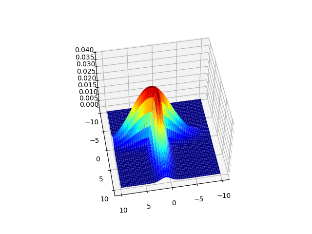
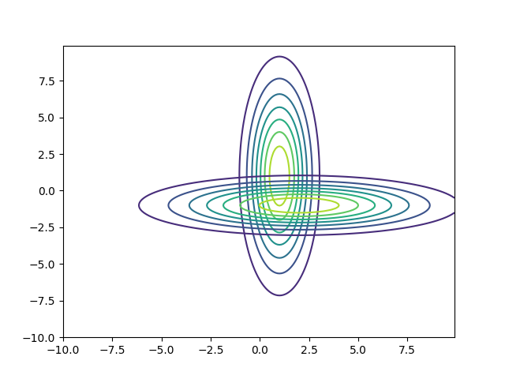
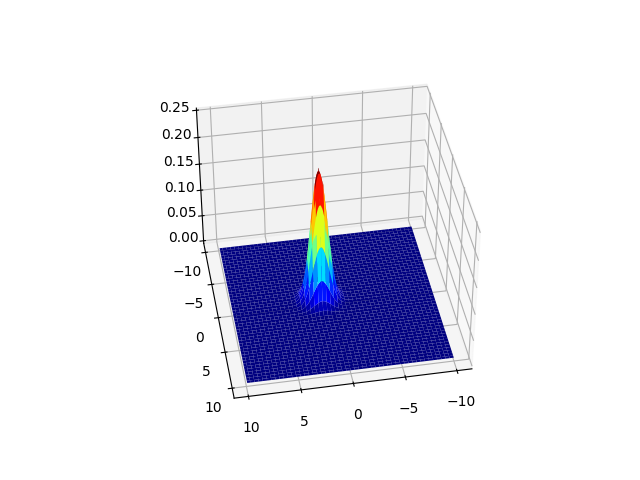
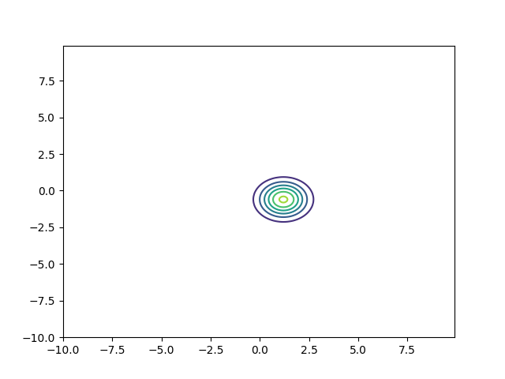

Algılayıcı Birleştirimi, Füzyonu (Sensor Fusion)
Tek boyutlu ortamda bir büyüklüğü mesela bir lokasyon bilgisi $x$'i, iki kere ölçüyoruz, ve bu ölçümü iki değişik algılayıcıya yaptırıyoruz, ve yine diyelim ki iki değişik alet bir cismin olduğu uzaklığını / yerini bize geri döndürüyor. Devam edelim, bu bilgilerde belli ölçüde gürültü var; bu aletlerin hatalı ölçümü yüzünden olabilir, çevre şartları sebebiyle olabilir, örnek olarak iki $z_1,z_2$ ölçümü için iki değişik belirsizlik (uncertainty) olduğunu farzedelim, bunlar $\sigma_1,\sigma_2$. Soru şu: bu iki ölçümü kullanarak daha iyi bir $x$ tahmini yapabilir miyiz?
Bunun için iki ölçümü bir şekilde birleştirmemiz gerekiyor. Her ölçümü Gaussian / Normal dağılım olarak modelleyebiliriz, o zaman iki Gaussian dağılımı bir şekilde birleştirmemiz (fusion) lazım.
Ölçümleri temsil etmek için Gaussian biçilmiş kaftan. Ölçümdeki belirsizliği standart sapma (standart deviation) üzerinden rahatlıkla temsil edebiliriz. Peki birleştirimi nasıl yapalım?
Bu tür problemlerde maksimum olurluk (maximum likelihood) kullanılması gerektiğini aşağı yukarı tahmin edebiliriz, çünkü maksimum olurluk verinin olurluğunu (olasılığını yani) maksimize ederek bilinmeyen parametreleri tahmin etmeye uğraşır. Çoğunlukla bu tekniği hep tek bir dağılım bağlamında görürüz, bazı bilinmeyen parametreleri olan tek bir dağılıma değişik veri noktaları verilerek olasılık sonuçları çarpılır, ve elde edilen formül maksimize edilmeye uğraşılırken aynı anda bilinmeyen parametrelerin optimal değerleri saptanmaya uğraşılır. Bizim bu problemimizde iki değişik dağılım olacak, maksimum olurluk illa tek bir dağılımla kullanılabilir diye bir kural yok.
Problemimizde iki ölçümü, iki Gaussian ile temsil edebiliriz, ve bu iki Gaussian'a verilen iki ölçüm noktasını olurluğunu bu Gaussian'ların sonuçlarını çarparak hesaplayabiliriz. Peki bilinmeyen parametre nedir? Onu da her iki Gaussian için de aynı olduğunu farzettiğimiz orta nokta (mean) olarak alabiliriz, ve $x$ olarak belirtiriz. Yani
$$ L(x) = p(z_1|x,\sigma_1) p(z_2|x,\sigma_2) $$
$$ L(x) \sim \exp{\frac{-(z_1-x)^2}{2\sigma_1^2} } \times \exp \frac{-(z_2-x)^2}{2\sigma_2^2} $$
1D Gaussian formülünü hatırlarsak,
$$ p(z;x,\sigma) = \frac{1}{\sigma\sqrt{2\pi}} \exp \bigg\{ - \frac{(z-x)^2}{2\sigma^2} \bigg\} $$
Ders notları [1]'de iki üstteki formülün nasıl maksimize edilerek bir $x_{MLE}$ formülüne erişildiğini görebiliriz.
Formül başındaki sabit kısmının $L(x)$'de kullanılmadığını görüyoruz, çünkü maksimizasyon açısından düşünürsek o kısım tekrar tekrar çarpılacak ve hesaplamaya çalıştığımız değişkenler açısından bu sürekli tekrar bir fark yaratmaz.
Bu metot işler. Fakat biz alternatif olarak daha temiz olacak değişik bir yoldan gideceğiz. Elimizdeki her iki ölçümü iki farklı tek boyutlu Gaussian yerine 2 boyutlu tek bir Gaussian içine koyacağız, iki ölçümü tek bir 2 boyutlu vektör içinde belirteceğiz yani, ve tek bir olasılık hesabını $p(z;x,\Sigma)$'i baz alacağız. Belirsizlikler ne olacak? Ölçüm belirsizliklerini bu 2D Gaussian'ın kovaryansında çapraza (diagonal) koyabiliriz, çapraz dişindaki matris öğeleri sıfır yapılırsa iki ölçümün birbirinden bağımsızlığını temsil etmiş oluruz. Maksimizasyon? Tek bir ölçümün olurluğunu maksimize edeceğiz, bu tek bir ölçümün olasılığını hesaplamaktan ibarettir, ve bu hesap sırasında bilinmeyen değişkenleri içeren yeni bir formül ortaya çıkacaktır. Maksimize etmeye uğraşacağımız bu formül olur.
Çok boyutlu Gaussian'ı hatırlayalım (artık $z,x$ birer vektör),
$$ p(z;x,\Sigma) = \frac{ 1}{(2\pi)^{k/2} \det(\Sigma)^{1/2}} \exp \bigg\{ -\frac{ 1}{2}(z-x)^T\Sigma^{-1}(z-x) \bigg\} $$
Kısaca,
$$ = \frac{ 1}{C} \exp \bigg\{ -\frac{ 1}{2}(z-x)^T\Sigma^{-1}(z-x) \bigg\} $$
Bir numara, $\exp$ ve parantez içi negatif ibareden kurtulmak için $-\ln p$ alalım,
$$ L = -\ln p(z) = \frac{ 1}{2}(z-x)^T\Sigma^{-1}(z-x) $$
Şimdi iki ölçümü, belirsizliği vektör / matris öğeleri olarak gösterelim,
$$ = \frac{1}{2}
\left[\begin{array}{c}
z_1-x \\ z_2-x
\end{array}\right]^T
\left[\begin{array}{cc}
\sigma_1^2 & 0 \\
0 & \sigma_2^2
\end{array}\right]^{-1}
\left[\begin{array}{c}
z_1-x \\ z_2-x
\end{array}\right]
$$
Çapraz matrisin tersini almak için çaprazdaki öğelerin tersini almak yeterlidir,
$$ = \frac{1}{2}
\left[\begin{array}{c}
z_1-x \\ z_2-x
\end{array}\right]^T
\left[\begin{array}{cc}
\sigma_1^{-2} & 0 \\
0 & \sigma_2^{-2}
\end{array}\right]
\left[\begin{array}{c}
z_1-x \\ z_2-x
\end{array}\right]
$$
$$ = \frac{1}{2}
\left[\begin{array}{cc}
\sigma_1^{-2}(z_1-x) & \sigma_2^{-2} (z_2-x)
\end{array}\right]
\left[\begin{array}{c}
z_1-x \\ z_2-x
\end{array}\right]
$$
$$ = \frac{1}{2}\sigma_1^{-2}(z_1-x)^2 + \frac{1}{2}\sigma_2^{-2} (z_2-x)^2 $$
Maksimize etmek için, formül karesel olduğuna göre, bilinmeyen $x$ değişkenine göre türev alıp sıfıra eşitleyebiliriz,
$$ \frac{dL}{dx} = \sigma_1^{-2}z_1-\sigma_1^{-2}x + \sigma_2^{-2}z_2-\sigma_2^{-2}x = 0 $$
$x$ üzerinden gruplarsak,
$$ -x(\sigma_1^{-2}+\sigma_2^{-2}) + \sigma_1^{-2}z_1+ \sigma_2^{-2}z_2 = 0 $$
Gruplanan kısmı eşitliğin sağına alalım,
$$ \sigma_1^{-2}z_1+ \sigma_2^{-2}z_2 = x(\sigma_1^{-2}+\sigma_2^{-2}) $$
$$ \frac{\sigma_1^{-2}z_1+ \sigma_2^{-2}z_2 }{\sigma_1^{-2}+\sigma_2^{-2}}= x_{MLE} $$
Gayet temiz bir şekilde sonuca eriştik.
Örnek
Elimizde belirsizlikleri $\sigma_1=10,\sigma_2=20$ olan iki algılayıcı var. Bu algılayıcılar aynı obje hakkında $z_1=130,z_2=170$ olarak iki ölçüm gönderiyorlar. Bu ölçümleri birleştirelim. Hatırlarsak $10^{-2}$ ile çarpmak $10^{2}$ ile bölmek aynı şey.
$$ x_{MLE} = \frac{130/10^2 + 170/20^2}{1/10^2 + 1/20^2} = 138.0 $$
Sonuç belirsizliği daha az olan ölçüme daha yakın çıktı, bu akla yatkın bir sonuç.
Çok Boyutlu Gaussian Füzyon
Peki ya elimizdeki ölçümlerin kendisi çok boyutlu ise? Yani $z_1,z_2$ birer vektör ise?
Yine maksimum olurluk üzerinden bir formül türetebiliriz. Bu durumda tek olasılık hesabı yetmez, iki ayrı dağılım olmalı,
$$ p(z_1;x,\Sigma_1) = \frac{ 1}{C_1} \exp \bigg\{ -\frac{ 1}{2}(z_1-x)^T\Sigma_1^{-1}(z_1-x) \bigg\} $$
$$ p(z_2;x,\Sigma_2) = \frac{ 1}{C_2} \exp \bigg\{ -\frac{ 1}{2}(z_2-x)^T\Sigma_2^{-1}(z_2-x) \bigg\} $$
Orta nokta $x$ her iki formülde aynı çünkü değişmeyen olan o; aynı orta nokta için tahmin üretmeye uğraşıyoruz. Bu durum bildik maksimum olurluk hesaplarına benziyor, fakat ilk başta belirttiğimiz gibi farklı türden olasılık fonksiyonlarının (bu sefer çok boyutlu) farklı veri noktaları üzerinden çarpılması.
Devam edelim. Daha önce $\ln$ alarak $\exp$'yi yoketmiştik. Bunun bir diğer faydası $\ln$ alınınca çarpımların toplama dönüşmesidir,
$$ L = p(z_1;x,\Sigma_1) p(z_2;x,\Sigma_2) $$
$$ -\ln L = -\ln p(z_1;x,\Sigma_1) -\ln p(z_2;x,\Sigma_2) $$
$$ \mathcal{L} = -\ln L = \frac{ 1}{2}(z_1-x)^T\Sigma_1^{-1}(z_1-x) + \frac{ 1}{2}(z_2-x)^T\Sigma_2^{-1}(z_2-x) $$
Şimdi eşitliğin sağ tarafının $x$'e göre türevini alalım, vektör ve matris bağlamında türev nasıl alınır? Herhangi bir $M$'in simetrik olduğu durumlarda (ki kovaryans matrisleri her zaman simetriktir, çünkü mesela iki değişkenli durumda $x_1,x_2$ kovaryansı -ilişkisi- $x_2,x_1$ kovaryansından farklı olamaz),
$$ \frac{\partial}{\partial x}[x^TMx] = 2Mx $$
olduğunu biliyoruz [2]. O zaman türev sonucu şöyle olur,
$$ \frac{d\mathcal{L}}{dx} = (z_1-x)^T\Sigma_1^{-1} + (z_2-x)^T\Sigma_2^{-1} $$
Sıfıra eşitleyip çözelim,
$$ (z_1-x)\Sigma_1^{-1} + (z_2-x)\Sigma_2^{-1} = 0 $$
$$ z_1\Sigma_1^{-1} - x\Sigma_1^{-1} + z_2\Sigma_2^{-1} - x\Sigma_2^{-1} = 0 $$
Yine $x$ altında gruplayalım,
$$ -x(\Sigma_1^{-1} + \Sigma_2^{-1}) + z_1\Sigma_1^{-1} + z_2\Sigma_2^{-1} = 0 $$
$$ z_1\Sigma_1^{-1} + z_2\Sigma_2^{-1} = x(\Sigma_1^{-1} + \Sigma_2^{-1}) $$
Eğer iki belirsizliğin toplamını $\Sigma_x^{-1}$ olarak özetlersek, yani
$$ \Sigma_x^{-1} = \Sigma_1^{-1} + \Sigma_2^{-1} $$
Not: Aslında $\Sigma_x$ te diyebilirdik, fakat tersi alınmış matrislerin toplamı olduğunu temsil etmesi için "tersi alınmış bir sembol" kullandık. Tabii diğer yandan tersin tersini alınca ele geçecek $\Sigma_x$'in de bir anlamı olduğu iddia edilebilir, bu $\Sigma_x$ en olası $x$ tahmininin yeni belirsizliğidir de bir bakıma.
Simdi ana formule donelim,
$$ z_1\Sigma_1^{-1} + z_2\Sigma_2^{-1} = x\Sigma_x^{-1} $$
$$ \Sigma_x (z_1\Sigma_1^{-1} + z_2\Sigma_2^{-1}) = x_{MLE} $$
Örnek
Elimizde iki tane iki boyutlu ölçüm var,
$$ z_1 = \left[\begin{array}{c} 1 \\ 1 \end{array}\right], z_2 = \left[\begin{array}{r} 2 \\ -1 \end{array}\right] $$
Ölçümler iki değişik algılayıcıdan geliyor, belirsizlikleri
$$ \Sigma_1 = \left[\begin{array}{cc} 1 & 0 \\ 0 & 4 \end{array}\right], \Sigma_2 = \left[\begin{array}{cc} 4 & 0 \\ 0 & 1 \end{array}\right] $$
Nihai ölçüm nedir?
from mpl_toolkits.mplot3d import Axes3D
from matplotlib import cm
import matplotlib.mlab as mlab
x = np.arange(-10.0, 10.0, 0.1)
y = np.arange(-10.0, 10.0, 0.1)
X, Y = np.meshgrid(x, y)
Z1 = mlab.bivariate_normal(X, Y, sigmax=1.0, sigmay=4.0,mux=1., \
muy=1.,sigmaxy=0.0)
Z2 = mlab.bivariate_normal(X, Y, sigmax=4.0, sigmay=1.0,mux=2., \
muy=-1.,sigmaxy=0.0)
# iki yuzeyi ayni grafikte birlestirmek icin herhangi iki nokta arasinda
# daha fazla (maksimum) olani al, cunku nihai yuzey olarak onu gormek
# istiyoruz zaten
Z = np.maximum(Z1,Z2)
fig = plt.figure()
ax = Axes3D(fig)
ax.view_init(elev=50., azim=80)
ax.plot_surface(X,Y,Z,cmap=cm.jet)
plt.savefig('fusion_1.png')

İki ölçümü Gaussian olarak ekrana bastık, bu Gaussian'ların orta noktası $z_1,z_2$, bu durumu maksimum olurluk için aynı olduğunu farz ettiğimiz $x$ ile karıştırmayalım; o $x$ modelleme sırasında olduğunu farzettiğimiz ideal bir Gaussian idi. Üstte sadece veri noktalarını ekrana basıyoruz.
Üstten bakışla kontur (contour) olarak gösterirsek
CS = plt.contour(X, Y, Z1,rotation=70)
CS = plt.contour(X, Y, Z2,rotation=70)
plt.savefig('fusion_3.png')

Resimde önce ilk ölçüm, sonra onunla yanyana olacak ikinci ölçüm koyulmuş.
$$ \Sigma_x^{-1} = \Sigma_1^{-1} + \Sigma_2^{-1} = \left[\begin{array}{cc} 1 & 0 \\ 0 & 0.25 \end{array}\right] + \left[\begin{array}{cc} 0.25 & 0 \\ 0 & 1 \end{array}\right] = \left[\begin{array}{cc} 1.25 & 0 \\ 0 & 1.25 \end{array}\right] $$
Tersini alalım
$$ \Sigma_x = \left[\begin{array}{cc} 0.8 & 0 \\ 0 & 0.8 \end{array}\right] $$
$$ x_{MLE} = \Sigma_x (z_1\Sigma_1^{-1} + z_2\Sigma_2^{-1}) $$
$$
x_{MLE} =
\left[\begin{array}{cc}
0.8 & 0 \\ 0 & 0.8
\end{array}\right]
\bigg(
\left[\begin{array}{cc}
1 & 0 \\ 0 & 0.25
\end{array}\right]
\left[\begin{array}{c}
1 \\ 1
\end{array}\right] +
\left[\begin{array}{cc}
0.25 & 0 \\ 0 & 1
\end{array}\right]
\left[\begin{array}{r}
2 \\ -1
\end{array}\right]
\bigg) =
\left[\begin{array}{r}
1.2 \\ -0.6
\end{array}\right]
$$
Sonuç grafiklenirse suna benzer (ki yeni belirsizlik $\Sigma_x$'i de grafikte kullanalım),
Z3 = mlab.bivariate_normal(X, Y, sigmax=0.8, sigmay=0.8,mux=1.2, \
muy=-0.6,sigmaxy=0.0)
fig = plt.figure()
ax = Axes3D(fig)
ax.view_init(elev=40.,azim=80)
ax.plot_surface(X,Y,Z3,cmap=cm.jet)
plt.savefig('fusion_2.png')

Yeni tahminimiz böyle çıktı. Çok daha emin olduğumuz bir noktada en olası ölçümü ortaya çıkardık. Kontur olarak grafiklersek,
CS = plt.contour(X, Y, Z3)
plt.savefig('fusion_4.png')

[1] Zisserman, Lectures 3 \& 4: Estimators, www.robots.ox.ac.uk/~az/lectures/est/lect34.pdf
[2] Hart, Duda, Pattern Classification
Yukarı